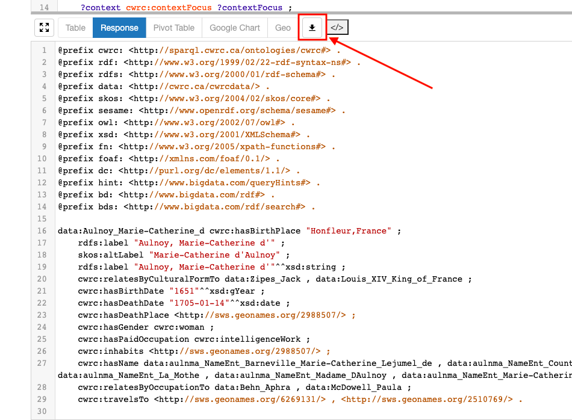
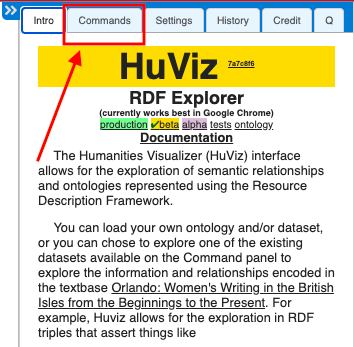
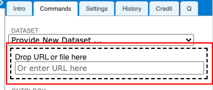

Uploading SPARQL Query Results to HuViz
HuViz is a browser-based interface for visualizing datasets and connections. You can upload your SPARQL query results into this tool, and use it to interact with and understand the data in different ways.
Downloading Query Results
-
Go to SPARQL Queries. Click on the menu icon at the top left of the panel:
-
Configure your request to provide output in turtle syntax, and then click on the menu icon again to collapse the panel:
-
Insert SPARQL query into available text box
-
Example query : This will find all the triples related to Marie-Catherine d'Aulnoy.
Important Note: this query is different from those on the Sample Queries page. The query below will get information about a specific person and all the triples related to her such that it can be used in HuViz.
The CONSTRUCT modifier is being used to create triples, and the following lines are creating a set of triples to output as a response:
?contextFocus ?subjectCentricPredicate ?o . ?contextFocus rdfs:label ?label. ?contextFocus skos:altLabel ?name.
You can substitute a name (in the inverted form) into this example query to create your own dataset.
PREFIX cwrc: <http://sparql.cwrc.ca/ontologies/cwrc#> PREFIX rdf: <http://www.w3.org/1999/02/22-rdf-syntax-ns#> PREFIX rdfs: <http://www.w3.org/2000/01/rdf-schema#> PREFIX data: <http://cwrc.ca/cwrcdata/> PREFIX skos: <http://www.w3.org/2004/02/skos/core#> CONSTRUCT { ?contextFocus ?subjectCentricPredicate ?o . ?contextFocus rdfs:label ?label. ?contextFocus skos:altLabel ?name. } WHERE { GRAPH <http://sparql.cwrc.ca/db/BiographyV2Beta> { ?person rdfs:label "Aulnoy, Marie-Catherine d'". BIND(?person AS ?contextFocus) ?context cwrc:contextFocus ?contextFocus ; ?p ?o ; } . # Grab the correct relationship for the predicate we are looking for ?p cwrc:subjectCentricPredicate ?subjectCentricPredicate . ?contextFocus rdfs:label ?label. ?contextFocus skos:altLabel ?name. }
-
-
Hit “play” to display the results of the query
-
Download results to your computer

-
Check your downloads folder for a file named “queryResults”. Rename the file so that the file extension is now '.ttl'. It can otherwise be named as you wish.
- Example: marie-catherine-aulnoy.ttl
Uploading to HuViz
Upload the .ttl file to HuViz by following these steps in the Commands tab:
-
Go to HuViz and select the "Commands" tab.

-
Once in the Commands tab, select "Provide New Dataset" from the "Dataset" dropdown.
Provide New Dataset ..." />
- There are two ways of uploading the dataset:
-
Drag and drop your downloaded file into this box:

or
-
Provide a github link such as https://raw.githubusercontent.com/alliyya/huviz_demo_data/master/marie-catherine-aulnoy.ttl
This is particularly useful if you want to share your results with someone else, or make modifications or additions to the SPARQL query results. Be sure to use the URL for the “Raw” version of the file in GitHub:
-
-
Click on the ONTOLOGY list and select the CWRC Ontology.
After you have selected the ontology, the LOAD button will become active.
- Click LOAD & Explore!